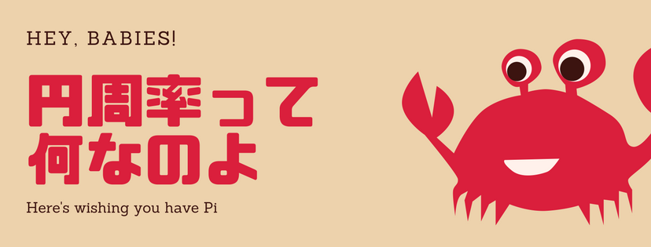

あのあれ、何だっけ・・・丸のやつ？
人類は40万年くらい前からいるんだけど、ここ4000年くらいは円周率について考えて来たらしいよ！！
- ・紀元前2000年ころ：とりあえず六角形で考えてみた時代
- ・0年頃：とりあえず8/25位で考えてみた時代
- ・1400年頃：3.14159265359まで分かった
人類は40万年くらい前からいるんだけど、ここ4000年くらいは円周率について考えて来たらしいよ！！
少なくとも5じゃないよ！ここまで読んでた？
ちなみに「ゆとり教育では円周率が3になった」という説は誤解らしいよ！
計算してみるか・・・。
まあそもそも円周率って細かく計算すると無限に小数が続くんだけど、
ここでは
「重心までの長さが1/2の多角形では、多角形の角の数を増やしていくと、
段々なめらかな丸に近づいて、周の長さは円周率に近づく」と言う考え方で、計算してみるよ。
何角形までやってみる？